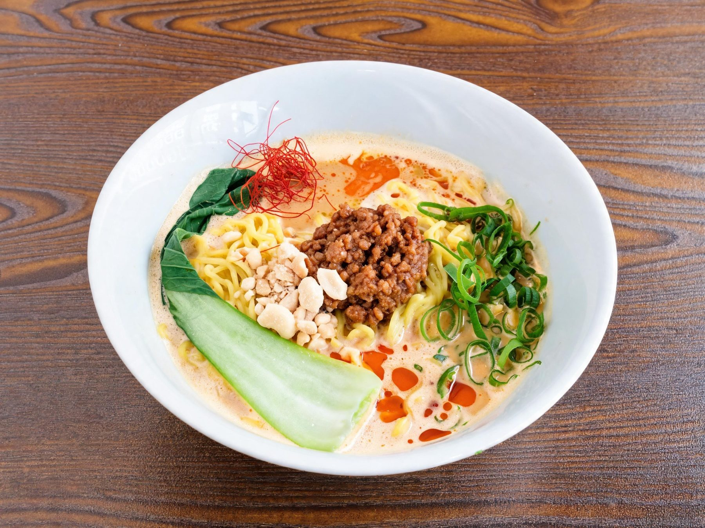

Classic Tantanmen
担々麺Our signature bowl. Creamy sesame broth with chilli oil, minced pork, peanuts, bok choy and spring onion.
Walk-ins welcome. Most guests just come by.
It is easiest to get a seat before 19:00.

TSUMUGIは、日本とオランダの心の交流に貢献する「接点」です。アムステルダムウエストにある小さならーめん屋から、一杯を通して人と人をつないでいきます。
私たちは、ファストラーナーであることに誇りを持っています。学び、恐れず試し、また学ぶ。「日本で食べたラーメンより美味い！」とお客さまに言っていただけるよう、日々技術の向上に努めます。
Tsumugi is a meeting point: a place that helps people from Japan and the Netherlands connect, heart to heart. We do it from a small ramen shop in Amsterdam West, one bowl at a time.
We are proud to be fast learners. We learn, we try without fear, and we learn again. Every day we work on our craft, so that one day our guests will say: "This is better than the ramen I had in Japan!"
| Monday | 17:00 – 22:00 |
|---|---|
| Tuesday | Closed |
| Wednesday | 17:00 – 22:00 |
| Thursday | 17:00 – 22:00 |
| Friday | 17:00 – 22:00 |
| Saturday | 17:00 – 22:00 |
| Sunday | 17:00 – 22:00 |
Mostly walk-in. No booking needed; seats are easiest to get before 19:00. Coming with a larger group? Reserve a table.